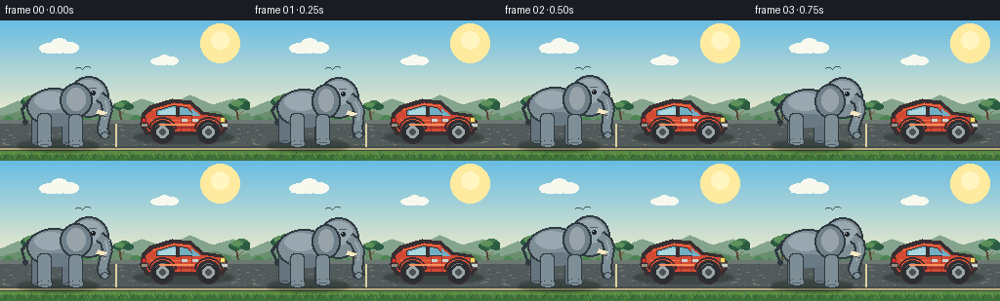
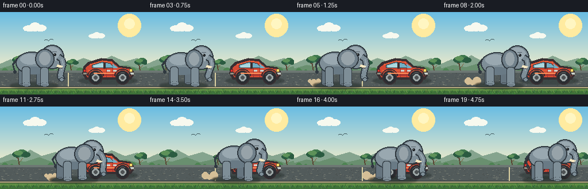

CODING AGENTS AS PIXEL WORLD MODELS
traex/DeepSeek-V4.1-Flash · dynamic_spatial_relationship_0066
点击播放 · 原生 RGB 像素
逐轮保存的候选
回放视频、检查图与代码变化。
每份候选均可单独播放。实际图片检查记录在下方工具轨迹中。
候选 01播放与检查图
点击播放 · 原生 RGB 像素

展开代码变化
--- 上一保存版本
+++ 本次保存版本
@@ -0,0 +1,332 @@
+from pathlib import Path
+
+import numpy as np
+from PIL import Image, ImageDraw, ImageFilter
+
+import artifact_io
+
+
+WIDTH = 256
+HEIGHT = 144
+FRAMES = 20
+
+CASE_DIR = Path(__file__).resolve().parent
+
+
+def gradient_image(width, height, top, bottom, y0=0, y1=None):
+ if y1 is None:
+ y1 = height
+ image = np.zeros((height, width, 3), dtype=np.uint8)
+ rows = np.arange(height, dtype=np.float32)
+ t = np.clip((rows - y0) / max(1, y1 - y0), 0.0, 1.0)
+ top = np.asarray(top, dtype=np.float32)
+ bottom = np.asarray(bottom, dtype=np.float32)
+ colors = top[None, :] * (1.0 - t[:, None]) + bottom[None, :] * t[:, None]
+ image[:, :, :] = np.round(colors)[:, None, :].astype(np.uint8)
+ return Image.fromarray(image, "RGB").convert("RGBA")
+
+
+def draw_cloud(draw, x, y, scale=1.0):
+ shadow = (178, 209, 216, 115)
+ white = (247, 249, 239, 238)
+ draw.ellipse((x - 17 * scale, y + 3 * scale, x + 19 * scale, y + 12 * scale), fill=shadow)
+ draw.ellipse((x - 22 * scale, y - 1 * scale, x + 9 * scale, y + 12 * scale), fill=white)
+ draw.ellipse((x - 8 * scale, y - 7 * scale, x + 18 * scale, y + 12 * scale), fill=white)
+ draw.ellipse((x + 4 * scale, y - 2 * scale, x + 31 * scale, y + 12 * scale), fill=white)
+ draw.rectangle((x - 19 * scale, y + 7 * scale, x + 27 * scale, y + 11 * scale), fill=white)
+
+
+def draw_tree(draw, x, ground_y, scale=1.0):
+ trunk = (89, 70, 53, 255)
+ trunk_light = (128, 96, 61, 255)
+ dark_leaf = (43, 91, 65, 255)
+ leaf = (63, 119, 77, 255)
+ light_leaf = (93, 145, 89, 255)
+ draw.line((x, ground_y, x - 3 * scale, ground_y - 22 * scale), fill=trunk, width=max(2, int(3 * scale)))
+ draw.line((x, ground_y - 9 * scale, x + 8 * scale, ground_y - 17 * scale), fill=trunk_light, width=max(1, int(2 * scale)))
+ draw.line((x - 2 * scale, ground_y - 14 * scale, x - 10 * scale, ground_y - 21 * scale), fill=trunk, width=max(1, int(2 * scale)))
+ draw.ellipse((x - 17 * scale, ground_y - 34 * scale, x + 7 * scale, ground_y - 20 * scale), fill=dark_leaf)
+ draw.ellipse((x - 7 * scale, ground_y - 38 * scale, x + 19 * scale, ground_y - 22 * scale), fill=leaf)
+ draw.ellipse((x + 5 * scale, ground_y - 33 * scale, x + 25 * scale, ground_y - 20 * scale), fill=dark_leaf)
+ draw.ellipse((x - 13 * scale, ground_y - 35 * scale, x + 8 * scale, ground_y - 26 * scale), fill=light_leaf)
+
+
+def draw_background():
+ image = gradient_image(WIDTH, HEIGHT, (105, 188, 226), (239, 235, 202), 0, 100)
+ draw = ImageDraw.Draw(image, "RGBA")
+
+ # Warm late-afternoon sun and a few high, thin clouds.
+ draw.ellipse((205, 3, 245, 43), fill=(255, 235, 160, 48))
+ draw.ellipse((216, 11, 234, 29), fill=(255, 246, 194, 220))
+ draw_cloud(draw, 57, 24, 0.75)
+ draw_cloud(draw, 166, 39, 0.52)
+
+ # Layered savanna hills.
+ far = [(0, 90), (18, 82), (34, 87), (52, 75), (72, 86), (96, 79), (122, 89),
+ (145, 80), (170, 88), (194, 76), (217, 86), (238, 80), (256, 88), (256, 105), (0, 105)]
+ draw.polygon(far, fill=(133, 164, 142, 255))
+ near = [(0, 98), (22, 92), (43, 96), (68, 88), (92, 97), (117, 91), (141, 98),
+ (168, 90), (193, 97), (219, 92), (241, 98), (256, 94), (256, 111), (0, 111)]
+ draw.polygon(near, fill=(105, 143, 111, 255))
+
+ draw_tree(draw, 34, 103, 0.72)
+ draw_tree(draw, 124, 101, 0.48)
+ draw_tree(draw, 244, 103, 0.58)
+
+ # Distant shrubs.
+ for x, y, r in [(8, 103, 7), (20, 104, 5), (88, 103, 7), (100, 104, 5),
+ (139, 103, 8), (152, 104, 5), (205, 104, 7), (230, 103, 8)]:
+ draw.ellipse((x - r, y - r // 2, x + r, y + r // 2 + 2), fill=(57, 111, 75, 255))
+ draw.ellipse((x - r + 2, y - r // 2 - 2, x + r - 2, y + 2), fill=(78, 132, 83, 255))
+
+ # Asphalt parking apron.
+ draw.rectangle((0, 102, WIDTH, 132), fill=(82, 91, 91, 255))
+ draw.rectangle((0, 102, WIDTH, 105), fill=(109, 119, 115, 255))
+ draw.rectangle((0, 129, WIDTH, 132), fill=(69, 77, 76, 255))
+ draw.line((0, 131, WIDTH, 131), fill=(183, 171, 127, 255), width=2)
+ draw.line((0, 133, WIDTH, 133), fill=(55, 74, 52, 255), width=2)
+
+ rng = np.random.default_rng(19)
+ for _ in range(360):
+ x = int(rng.integers(0, WIDTH))
+ y = int(rng.integers(106, 129))
+ shade = int(rng.integers(63, 113))
+ draw.point((x, y), fill=(shade, shade + 4, shade + 2, 150))
+ for _ in range(70):
+ x = int(rng.integers(0, WIDTH))
+ y = int(rng.integers(108, 128))
+ draw.line((x, y, x + int(rng.integers(1, 4)), y), fill=(116, 121, 112, 90))
+
+ # Parking line visible behind the car.
+ draw.line((118, 106, 118, 129), fill=(220, 209, 161, 175), width=2)
+
+ # Foreground grass bank.
+ draw.rectangle((0, 134, WIDTH, HEIGHT), fill=(62, 113, 57, 255))
+ draw.rectangle((0, 134, WIDTH, 137), fill=(91, 139, 66, 255))
+ for _ in range(90):
+ x = int(rng.integers(0, WIDTH))
+ y = int(rng.integers(136, HEIGHT))
+ color = (int(rng.integers(54, 94)), int(rng.integers(103, 147)), int(rng.integers(50, 82)), 255)
+ draw.line((x, y, x - 1, y - int(rng.integers(1, 4))), fill=color)
+ for x in range(2, WIDTH, 13):
+ draw.line((x, 140, x - 2, 136), fill=(104, 157, 73, 255))
+ draw.line((x + 2, 141, x + 4, 137), fill=(47, 92, 49, 255))
+
+ # A couple of tiny birds keep the sky from feeling empty.
+ draw.arc((76, 48, 84, 54), 200, 345, fill=(65, 88, 93, 190), width=1)
+ draw.arc((85, 47, 93, 53), 195, 340, fill=(65, 88, 93, 190), width=1)
+ return image
+
+
+def draw_car(image):
+ draw = ImageDraw.Draw(image, "RGBA")
+
+ # Ground shadow.
+ shadow = Image.new("RGBA", (WIDTH, HEIGHT), (0, 0, 0, 0))
+ sdraw = ImageDraw.Draw(shadow, "RGBA")
+ sdraw.ellipse((137, 113, 238, 126), fill=(31, 42, 40, 105))
+ shadow = shadow.filter(ImageFilter.GaussianBlur(1.2))
+ image.alpha_composite(shadow)
+
+ outline = (55, 47, 50, 255)
+ red = (211, 74, 52, 255)
+ red_light = (238, 111, 67, 255)
+ red_dark = (155, 50, 48, 255)
+ glass = (113, 174, 195, 255)
+ glass_light = (171, 216, 222, 255)
+ chrome = (202, 211, 205, 255)
+
+ # Main compact-car silhouette, facing right.
+ body = [(143, 107), (145, 95), (153, 87), (176, 80), (195, 82), (207, 93),
+ (226, 96), (232, 103), (232, 111), (227, 117), (149, 117)]
+ draw.polygon(body, fill=outline)
+ inner = [(147, 105), (149, 97), (157, 90), (178, 84), (194, 86), (205, 96),
+ (225, 99), (229, 104), (229, 109), (225, 113), (152, 113)]
+ draw.polygon(inner, fill=red)
+
+ # Roof and body highlights.
+ draw.line((157, 91, 178, 85, 194, 87), fill=red_light, width=2)
+ draw.line((154, 101, 222, 102), fill=red_light, width=2)
+ draw.line((154, 109, 224, 109), fill=red_dark, width=2)
+
+ # Windows and pillars.
+ draw.polygon([(160, 92), (177, 87), (191, 89), (199, 97), (160, 97)], fill=glass, outline=outline)
+ draw.polygon([(163, 93), (176, 89), (181, 90), (181, 96), (163, 96)], fill=glass_light)
+ draw.polygon([(196, 90), (204, 97), (197, 97)], fill=glass)
+ draw.rectangle((180, 88, 183, 98), fill=outline)
+
+ # Doors, handle, lights, bumpers.
+ draw.line((185, 98, 185, 113), fill=red_dark, width=1)
+ draw.line((196, 98, 196, 113), fill=red_dark, width=1)
+ draw.rectangle((186, 101, 191, 103), fill=chrome)
+ draw.rectangle((197, 101, 202, 103), fill=chrome)
+ draw.rectangle((225, 99, 230, 104), fill=(249, 219, 104, 255), outline=(112, 86, 52, 255))
+ draw.rectangle((145, 100, 149, 104), fill=(230, 52, 45, 255), outline=(99, 43, 43, 255))
+ draw.rectangle((224, 105, 233, 109), fill=chrome, outline=(98, 95, 91, 255))
+ draw.rectangle((144, 105, 151, 109), fill=(150, 144, 131, 255), outline=outline)
+
+ # Wheels sit behind the lower body.
+ for cx in (166, 213):
+ draw.ellipse((cx - 12, 102, cx + 12, 126), fill=outline)
+ draw.ellipse((cx - 10, 104, cx + 10, 124), fill=(42, 45, 49, 255))
+ draw.ellipse((cx - 6, 108, cx + 6, 120), fill=(157, 166, 166, 255))
+ draw.ellipse((cx - 3, 111, cx + 3, 117), fill=(78, 82, 84, 255))
+ draw.arc((cx - 8, 105, cx + 8, 121), 205, 305, fill=(105, 109, 109, 255), width=1)
+
+ # Wheel-arch shadows and a soft reflection on the paint.
+ draw.arc((152, 99, 180, 123), 180, 360, fill=outline, width=2)
+ draw.arc((199, 99, 227, 123), 180, 360, fill=outline, width=2)
+ draw.line((163, 106, 198, 106), fill=(250, 143, 91, 100), width=2)
+
+
+def draw_leg(draw, x, top, bottom, width, fill, outline, foot_lift=0, toe_color=None):
+ bottom -= foot_lift
+ draw.rounded_rectangle(
+ (x - width // 2 - 1, top - 1, x + width // 2 + 1, bottom + 2),
+ radius=max(2, width // 3),
+ fill=outline,
+ )
+ draw.rounded_rectangle(
+ (x - width // 2, top, x + width // 2, bottom),
+ radius=max(2, width // 3),
+ fill=fill,
+ )
+ draw.ellipse((x - width // 2 - 1, bottom - 3, x + width // 2 + 2, bottom + 4), fill=outline)
+ draw.ellipse((x - width // 2, bottom - 3, x + width // 2 + 1, bottom + 3), fill=fill)
+ if toe_color is not None:
+ draw.line((x - width // 3, bottom + 1, x + width // 3, bottom + 1), fill=toe_color, width=1)
+
+
+def draw_elephant(image, center_x, frame_index, moving=True):
+ draw = ImageDraw.Draw(image, "RGBA")
+
+ phase = 2.0 * np.pi * frame_index / 5.0
+ bob = int(round(1.4 * np.sin(phase * 2.0))) if moving else 0
+ sway = float(np.sin(phase)) if moving else 0.0
+ stride = float(np.sin(phase)) if moving else 0.0
+ ear_flap = int(round(2.0 * np.sin(phase * 0.72))) if moving else 0
+ tail_swing = int(round(2.5 * np.sin(phase * 0.55 + 0.8))) if moving else 0
+
+ outline = (48, 57, 64, 255)
+ far_fill = (101, 116, 126, 255)
+ body_fill = (126, 142, 151, 255)
+ light_fill = (153, 168, 176, 255)
+ belly_fill = (105, 122, 133, 255)
+ ear_fill = (112, 128, 138, 255)
+ ear_inner = (151, 163, 169, 255)
+ tusk = (245, 232, 194, 255)
+
+ # Foreground shadow.
+ shadow = Image.new("RGBA", (WIDTH, HEIGHT), (0, 0, 0, 0))
+ sdraw = ImageDraw.Draw(shadow, "RGBA")
+ sdraw.ellipse((center_x - 41, 122, center_x + 43, 134), fill=(24, 35, 29, 105))
+ shadow = shadow.filter(ImageFilter.GaussianBlur(1.4))
+ image.alpha_composite(shadow)
+
+ # Tail.
+ tail_x = center_x - 28
+ draw.line((tail_x, 81 + bob, tail_x - 8, 91 + bob, tail_x - 5 + tail_swing, 103),
+ fill=outline, width=3)
+ draw.ellipse((tail_x - 7 + tail_swing, 101, tail_x - 2 + tail_swing, 107), fill=outline)
+
+ # Far legs.
+ far_hind_x = center_x - 20 - int(round(3 * stride))
+ far_front_x = center_x + 11 + int(round(3 * stride))
+ draw_leg(draw, far_hind_x, 95, 124, 11, far_fill, outline,
+ foot_lift=2 if stride > 0.45 else 0, toe_color=(70, 79, 85, 255))
+ draw_leg(draw, far_front_x, 96, 124, 11, far_fill, outline,
+ foot_lift=2 if stride < -0.45 else 0, toe_color=(70, 79, 85, 255))
+
+ # Barrel body.
+ body_box = (center_x - 31, 69 + bob, center_x + 25, 108 + bob)
+ draw.ellipse(body_box, fill=outline)
+ draw.ellipse((body_box[0] + 2, body_box[1] + 2, body_box[2] - 2, body_box[3] - 2), fill=body_fill)
+ draw.ellipse((center_x - 23, 73 + bob, center_x + 10, 91 + bob), fill=light_fill)
+ draw.ellipse((center_x - 19, 95 + bob, center_x + 18, 108 + bob), fill=belly_fill)
+
+ # Head, ear, and face.
+ head_box = (center_x + 12, 57 + bob, center_x + 53, 99 + bob)
+ draw.ellipse(head_box, fill=outline)
+ draw.ellipse((head_box[0] + 2, head_box[1] + 2, head_box[2] - 2, head_box[3] - 2), fill=body_fill)
+ draw.ellipse((center_x + 17, 61 + bob, center_x + 47, 85 + bob), fill=light_fill)
+
+ ear_box = (center_x + 3 + ear_flap, 64 + bob, center_x + 36 - ear_flap, 99 + bob)
+ draw.ellipse(ear_box, fill=outline)
+ draw.ellipse((ear_box[0] + 2, ear_box[1] + 2, ear_box[2] - 2, ear_box[3] - 2), fill=ear_fill)
+ draw.ellipse((center_x + 10 + ear_flap, 69 + bob, center_x + 29 - ear_flap, 92 + bob), fill=ear_inner)
+
+ # Trunk is drawn in two passes so it has a clean silhouette.
+ trunk_points = [
+ (center_x + 43, 77 + bob),
+ (center_x + 49, 82 + bob),
+ (center_x + 51 + int(round(2 * sway)), 91 + bob),
+ (center_x + 48 + int(round(4 * sway)), 101 + bob),
+ (center_x + 46 + int(round(5 * sway)), 111),
+ (center_x + 49 + int(round(4 * sway)), 118),
+ ]
+ draw.line(trunk_points, fill=outline, width=12, joint="curve")
+ draw.line(trunk_points, fill=body_fill, width=8, joint="curve")
+ draw.line(trunk_points[1:4], fill=light_fill, width=2, joint="curve")
+ draw.ellipse((center_x + 45 + int(round(4 * sway)), 114,
+ center_x + 53 + int(round(4 * sway)), 121), fill=outline)
+ draw.ellipse((center_x + 46 + int(round(4 * sway)), 115,
+ center_x + 52 + int(round(4 * sway)), 120), fill=body_fill)
+
+ # Tusk, eye, brow, and mouth.
+ draw.polygon([(center_x + 42, 91 + bob), (center_x + 51, 94 + bob),
+ (center_x + 47, 97 + bob), (center_x + 40, 95 + bob)], fill=tusk)
+ draw.line((center_x + 45, 97 + bob, center_x + 50, 98 + bob), fill=(83, 70, 61, 255), width=1)
+ draw.ellipse((center_x + 35, 72 + bob, center_x + 39, 76 + bob), fill=(34, 39, 43, 255))
+ draw.point((center_x + 36, 73 + bob), fill=(245, 245, 224, 255))
+ draw.line((center_x + 33, 69 + bob, center_x + 40, 69 + bob), fill=(82, 93, 101, 255), width=1)
+
+ # Near legs.
+ near_hind_x = center_x - 13 + int(round(3 * stride))
+ near_front_x = center_x + 19 - int(round(3 * stride))
+ draw_leg(draw, near_hind_x, 96, 126, 12, body_fill, outline,
+ foot_lift=2 if stride < -0.45 else 0, toe_color=(83, 96, 104, 255))
+ draw_leg(draw, near_front_x, 97, 126, 12, body_fill, outline,
+ foot_lift=2 if stride > 0.45 else 0, toe_color=(83, 96, 104, 255))
+
+
+def draw_dust(image, center_x, frame_index):
+ if frame_index < 4 or frame_index > 18:
+ return
+ draw = ImageDraw.Draw(image, "RGBA")
+ age = (frame_index - 4) % 6
+ base_x = center_x - 30
+ for index, offset in enumerate((0, 8, 15)):
+ radius = 3 + ((age + index * 2) % 5)
+ alpha = max(20, 88 - age * 10 - index * 12)
+ x = base_x - offset - age * 2
+ y = 120 + (index % 2) * 3
+ draw.ellipse((x - radius, y - radius, x + radius, y + radius),
+ fill=(213, 191, 151, alpha))
+
+
+def build_frames():
+ background = draw_background()
+ draw_car(background)
+
+ # A relaxed start, a steady crossing, then a short settle at the front bumper.
+ centers = [58, 58, 59, 62, 67, 74, 82, 91, 100, 109,
+ 118, 127, 136, 145, 154, 163, 171, 177, 181, 183]
+
+ frames = []
+ for index, center_x in enumerate(centers):
+ frame = background.copy()
+ moving = 1 <= index <= 18
+ draw_dust(frame, center_x, index)
+ draw_elephant(frame, center_x, index, moving=moving)
+ frames.append(np.asarray(frame.convert("RGB"), dtype=np.uint8))
+ return np.stack(frames, axis=0)
+
+
+def main():
+ frames = build_frames()
+ artifact_io.save(frames, CASE_DIR)
+ print(f"saved {len(frames)} frames to {CASE_DIR}")
+
+
+if __name__ == "__main__":
+ main()
候选 02播放与检查图
点击播放 · 原生 RGB 像素


展开代码变化
--- 上一保存版本
+++ 本次保存版本
@@ -1,6 +1,7 @@
from pathlib import Path
import numpy as np
+import imageio.v2 as imageio
from PIL import Image, ImageDraw, ImageFilter
import artifact_io
@@ -325,7 +326,16 @@
def main():
frames = build_frames()
artifact_io.save(frames, CASE_DIR)
- print(f"saved {len(frames)} frames to {CASE_DIR}")
+ imageio.mimsave(
+ CASE_DIR / "rgb_video.mp4",
+ frames,
+ fps=4,
+ codec="libx264",
+ quality=9,
+ macro_block_size=1,
+ output_params=["-pix_fmt", "yuv420p", "-movflags", "+faststart"],
+ )
+ print(f"saved {len(frames)} frames and rgb_video.mp4 to {CASE_DIR}")
if __name__ == "__main__":
候选 03播放与检查图
点击播放 · 原生 RGB 像素

展开代码变化
--- 上一保存版本
+++ 本次保存版本
@@ -24,7 +24,7 @@
bottom = np.asarray(bottom, dtype=np.float32)
colors = top[None, :] * (1.0 - t[:, None]) + bottom[None, :] * t[:, None]
image[:, :, :] = np.round(colors)[:, None, :].astype(np.uint8)
- return Image.fromarray(image, "RGB").convert("RGBA")
+ return Image.fromarray(image).convert("RGBA")
def draw_cloud(draw, x, y, scale=1.0):
@@ -333,7 +333,7 @@
codec="libx264",
quality=9,
macro_block_size=1,
- output_params=["-pix_fmt", "yuv420p", "-movflags", "+faststart"],
+ output_params=["-movflags", "+faststart"],
)
print(f"saved {len(frames)} frames and rgb_video.mp4 to {CASE_DIR}")
可观测工具轨迹
实际执行的命令与返回图片。
命令 1exit 0
/bin/bash -c "pwd && rg --files -g 'prompt.txt' -g 'GENERATION_RULES.md' -g 'task_spec.json' -g '"'!*.mp4'"' -g '"'!*.mov'"' -g '"'!*.webm'"'"
命令 2exit 0
/bin/bash -c "find . -maxdepth 2 -type f -printf '%p %s bytes\\n' | sort"
命令 3exit 0
/bin/bash -c 'git status --short --branch'
命令 4exit 0
/bin/bash -c 'cat prompt.txt'
命令 5exit 0
/bin/bash -c 'cat GENERATION_RULES.md'
命令 6exit 0
/bin/bash -c 'cat task_spec.json'
命令 7exit 0
/bin/bash -c 'cat artifact_io.py'
命令 8exit 0
/bin/bash -c 'cat player_template.html'
命令 9exit 0
/bin/bash -c 'python generate.py'
命令 10exit 127
/bin/bash -c 'file pixels.npz inspection.png transition_check.png index.html && du -h pixels.npz index.html inspection.png'
命令 11exit 0
/bin/bash -c 'command -v ffmpeg || true; command -v ffprobe || true'
命令 12exit 0
/bin/bash -c "python - <<'PY'
from pathlib import Path
import numpy as np
from PIL import Image
frames=np.stack([np.asarray(Image.open(p).convert('RGB')) for p in sorted(Path('frames').glob('*.png'))])
print('shape', frames.shape, 'dtype', frames.dtype)
print('per-frame unique colors', [len(np.unique(f.reshape(-1,3), axis=0)) for f in frames])
diff=np.abs(frames[1:].astype(int)-frames[:-1].astype(int))
print('changed pixels/frame', [(d.max(axis=2)>0).sum() for d in diff])
print('mean adjacent abs diff', [round(float(d.mean()),2) for d in diff])
for i in [0,5,10,15,19]:
# non-background region statistics around the elephant route
crop=frames[i, 50:135, 15:245]
print(i, 'crop mean', np.round(crop.mean(axis=(0,1)),1), 'std', round(float(crop.std()),1))
PY"命令 13exit 0
/bin/bash -c 'python -m py_compile generate.py artifact_io.py'
命令 14exit 0
/bin/bash -c "python - <<'PY'
import json, re
from pathlib import Path
import numpy as np
text=Path('index.html').read_text()
m=re.search(r'const DATA=(\\{.*?\\}),W=', text, re.S)
assert m, 'embedded DATA missing'
data=json.loads(m.group(1))
print('player payload:', data['width'], data['height'], data['frames'], data['fps'], 'deltas', len(data['deltas']))
z=np.load('pixels.npz')['pixels']
print('pixels.npz:', z.shape, z.dtype, 'range', int(z.min()), int(z.max()))
assert z.shape == (144,256,20)
assert all(Path(f'frames/{i:02d}.png').is_file() for i in range(20))
print('all frame artifacts present')
PY"命令 15exit 0
/bin/bash -c "python - <<'PY'
try:
import imageio
print('imageio', imageio.__version__)
except Exception as e: print('no imageio', e)
try:
import cv2
print('cv2', cv2.__version__)
except Exception as e: print('no cv2', e)
PY"命令 16exit 0
/bin/bash -c 'python generate.py'
命令 17exit 0
/bin/bash -c "python - <<'PY'
import imageio.v2 as imageio
from pathlib import Path
p=Path('rgb_video.mp4')
r=imageio.get_reader(p)
meta=r.get_meta_data()
print('bytes', p.stat().st_size)
print('metadata', {k:meta.get(k) for k in ['fps','duration','size','codec','pix_fmt']})
count=0
for frame in r:
if count == 0:
print('first frame', frame.shape, frame.dtype, int(frame.min()), int(frame.max()))
count += 1
print('decoded frames', count)
PY"命令 18exit 0
/bin/bash -c "ls -la | sed -n '1,80p'; du -h rgb_video.mp4 index.html pixels.npz inspection.png transition_check.png"
命令 19exit 0
/bin/bash -c 'python -W error generate.py'
命令 20exit 1
/bin/bash -c "python - <<'PY'
from pathlib import Path
import hashlib, json, re
import imageio.v2 as imageio
import numpy as np
p=Path('rgb_video.mp4')
r=imageio.get_reader(p)
meta=r.get_meta_data()
frames=list(r)
assert len(frames)==20, len(frames)
assert frames[0].shape==(144,256,3)
assert abs(meta['fps']-4.0)<1e-6 and abs(meta['duration']-5.0)<1e-6
assert meta['codec']=='h264'
assert all(Path(f'frames/{i:02d}.png').is_file() for i in range(20))
assert Path('index.html').is_file() and Path('pixels.npz').is_file()
z=np.load('pixels.npz')['pixels']
assert z.shape==(144,256,20) and z.dtype==np.uint32
text=Path('index.html').read_text()
m=re.search(r'const DATA=(\\{.*?\\}),W=', text, re.S)
data=json.loads(m.group(1))
assert (data['width'],data['height'],data['frames'],data['fps'])==(256,144,20,4.0)
assert len(data['deltas'])==19
print('FINAL VALIDATION PASSED')
print('video:', p.stat().st_size, 'bytes,', meta['size'], 'at', meta['fps'], 'fps,', meta['duration'], 'seconds,', len(frames), 'frames')
print('sha256:', hashlib.sha256(p.read_bytes()).hexdigest())
PY"命令 21exit 0
/bin/bash -c "python - <<'PY'
from pathlib import Path
import hashlib, json, re
import imageio.v2 as imageio
import numpy as np
p=Path('rgb_video.mp4')
r=imageio.get_reader(p)
meta=r.get_meta_data()
count=0
first_shape=None
for frame in r:
if first_shape is None:
first_shape=frame.shape
count += 1
r.close()
assert count==20, count
assert first_shape==(144,256,3), first_shape
assert abs(meta['fps']-4.0)<1e-6 and abs(meta['duration']-5.0)<1e-6
assert meta['codec']=='h264'
assert all(Path(f'frames/{i:02d}.png').is_file() for i in range(20))
assert Path('index.html').is_file() and Path('pixels.npz').is_file()
z=np.load('pixels.npz')['pixels']
assert z.shape==(144,256,20) and z.dtype==np.uint32
text=Path('index.html').read_text()
m=re.search(r'const DATA=(\\{.*?\\}),W=', text, re.S)
data=json.loads(m.group(1))
assert (data['width'],data['height'],data['frames'],data['fps'])==(256,144,20,4.0)
assert len(data['deltas'])==19
print('FINAL VALIDATION PASSED')
print('video:', p.stat().st_size, 'bytes,', meta['size'], 'at', meta['fps'], 'fps,', meta['duration'], 'seconds,', count, 'frames')
print('sha256:', hashlib.sha256(p.read_bytes()).hexdigest())
PY"命令 22exit 0
/bin/bash -c 'git status --short -- generate.py rgb_video.mp4 frames index.html pixels.npz inspection.png transition_check.png'
保存候选 3 份；完成命令 22 次；可验证图片返回 0 张。原始 API 响应与完整日志保留在本地。